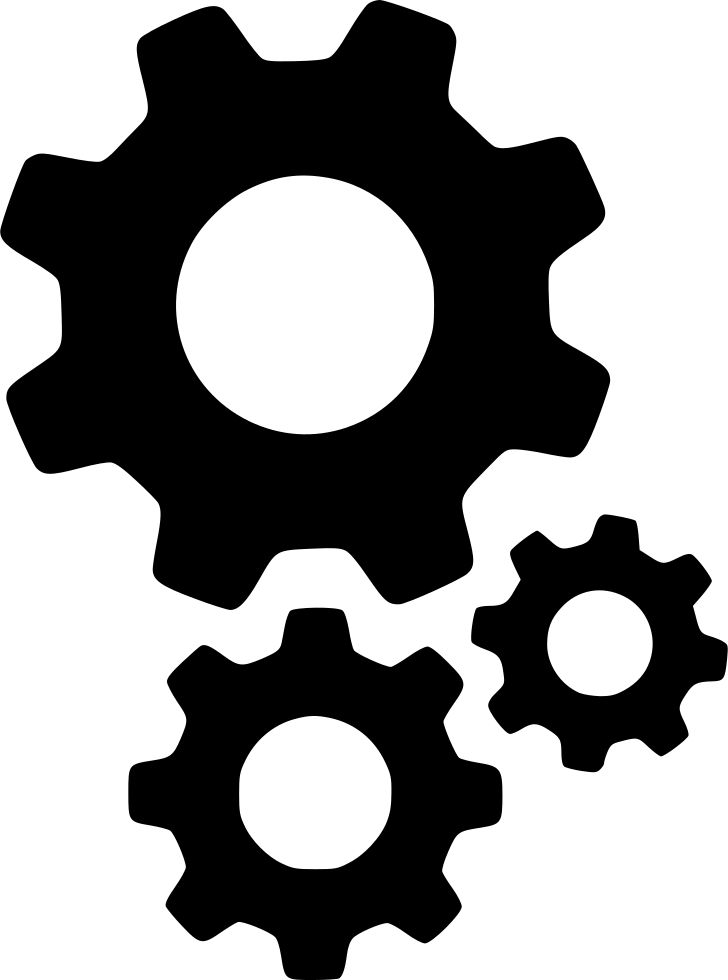

<ion-header>
  <ion-navbar>
    <button ion-button menuToggle>
      <ion-icon name="menu"></ion-icon>
    </button>
    <ion-title>Menu Principal</ion-title>
  </ion-navbar>
</ion-header>


<ion-content padding>
  <h4>Bienvenid@,</h4>
  <h5>A continuación, seleccione la opción de menú requerida</h5>
  <h6 style="display:none">{{userDetails}}</h6>

  <ion-list>
    <ion-item>
      
      
    </ion-item>
    <ion-item>
      
      
    </ion-item>
  </ion-list>

</ion-content>
